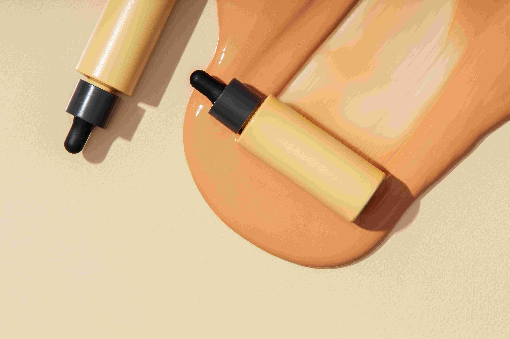
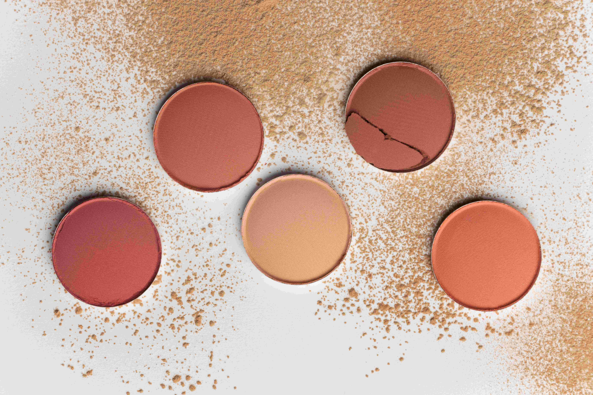

Categoría: Maquillaje

Colorete natural

Máscara de pestañas
Sobre Maquillaje
El maquillaje puede ser una forma de expresión, pero también debe ser un aliado del cuidado personal. Por eso, nuestros productos de maquillaje están formulados con ingredientes naturales, sin tóxicos ni fragancias sintéticas, para embellecer tu rostro sin dañarlo.
Nuestra línea de maquillaje natural incluye bases ligeras, coloretes minerales, máscaras de pestañas con aceites vegetales y mucho más.
Todo lo que necesitas para resaltar tu belleza sin ocultarla, con resultados frescos, duraderos y respetuosos con tu piel.
Creemos en un maquillaje que realza lo mejor de ti. Que te permite sentirte cómoda, luminosa y tú misma. Porque no se trata de esconder, sino de brillar con autenticidad.
Explora nuestra gama y descubre cómo el maquillaje natural puede ser igual de eficaz, mucho más saludable, y cien veces más tú.